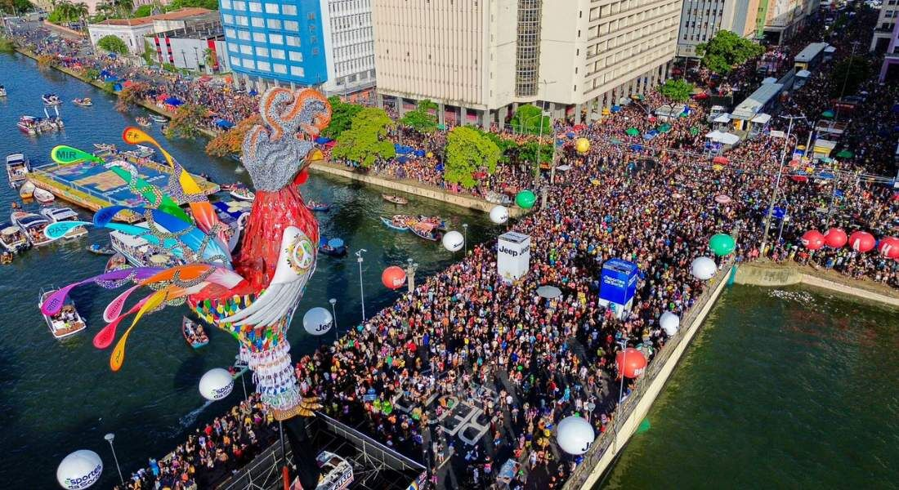

O maior bloco de carnaval do mundo
Galo de Madrugada
O Galo da Madrugada é mais do que um bloco de carnaval do Recife-PE; é um símbolo da cultura pernambucana e da alegria contagiante do Recife. Fundado em 1978, o bloco nasceu com o objetivo de revitalizar o carnaval de rua da cidade e rapidamente se tornou uma das maiores expressões culturais do Brasil. Todo ano, no sábado de Zé Pereira, as ruas do centro do Recife se transformam em um mar de foliões. O desfile começa logo cedo, como o nome sugere, e arrasta milhões de pessoas pelas avenidas, ao som do frevo, o ritmo mais autêntico de Pernambuco. A marca registrada do bloco é o imponente galo gigante, que muda de visual a cada edição, sendo aguardado com grande expectativa. Além do frevo, o Galo da Madrugada é acompanhado por orquestras, maracatus, caboclinhos e blocos líricos, garantindo uma mistura de ritmos e manifestações culturais. Cada esquina é tomada por cores, fantasias, sombrinhas de frevo e, claro, muita animação.